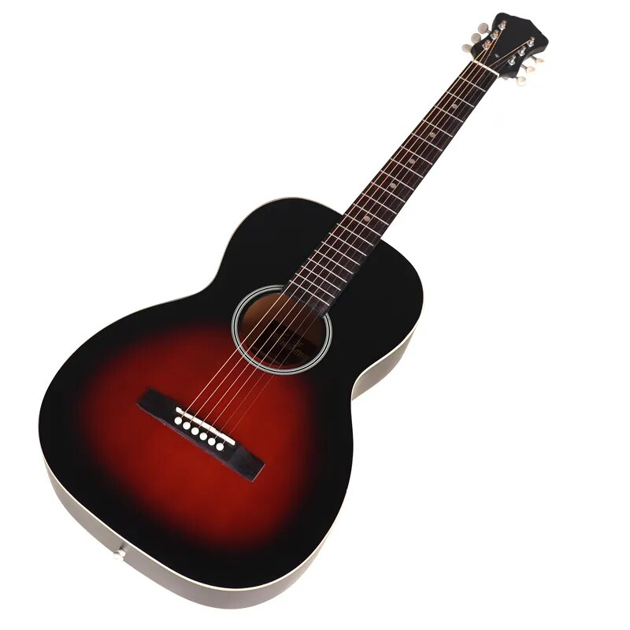

Гитара
Гитара - это струнный музыкальный инструмент, один из самых популярных и универсальных в мире. Её звук создаётся путём постукивания или перебора струн, натянутых на деревянном корпусе.
Этот инструмент имеет долгую историю, охватывающую множество культур и музыкальных стилей. Гитара может быть использована как сольный инструмент, так и в составе различных ансамблей, включая оркестры, рок-группы, фолк-команды и многие другие.
Гитары могут быть акустическими или электрическими. Акустическая гитара создает звук путем резонанса внутри своего корпуса, тогда как электрическая гитара использует магнитные заслонки для преобразования колебаний струн в электрический сигнал, который затем усиливается через гитарный усилитель.
Гитара является неотъемлемой частью многих музыкальных жанров, включая рок, поп, джаз, фламенко, блюз и многие другие. Её универсальность, портативность и возможность выразить широкий диапазон эмоций делают её одним из самых любимых инструментов среди музыкантов и слушателей.